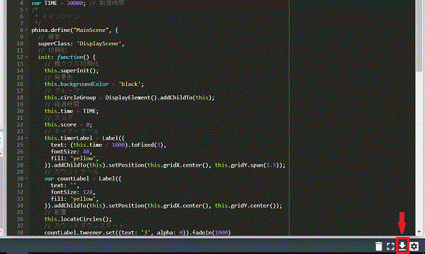
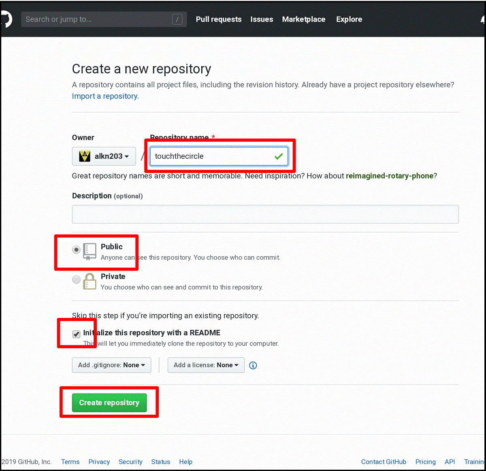
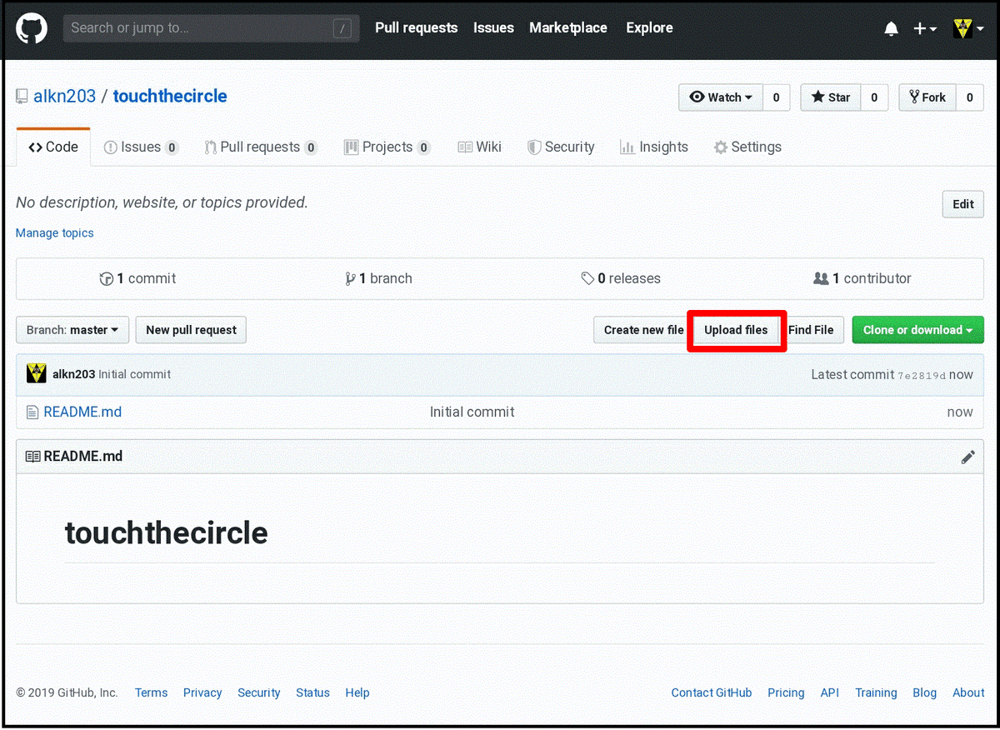
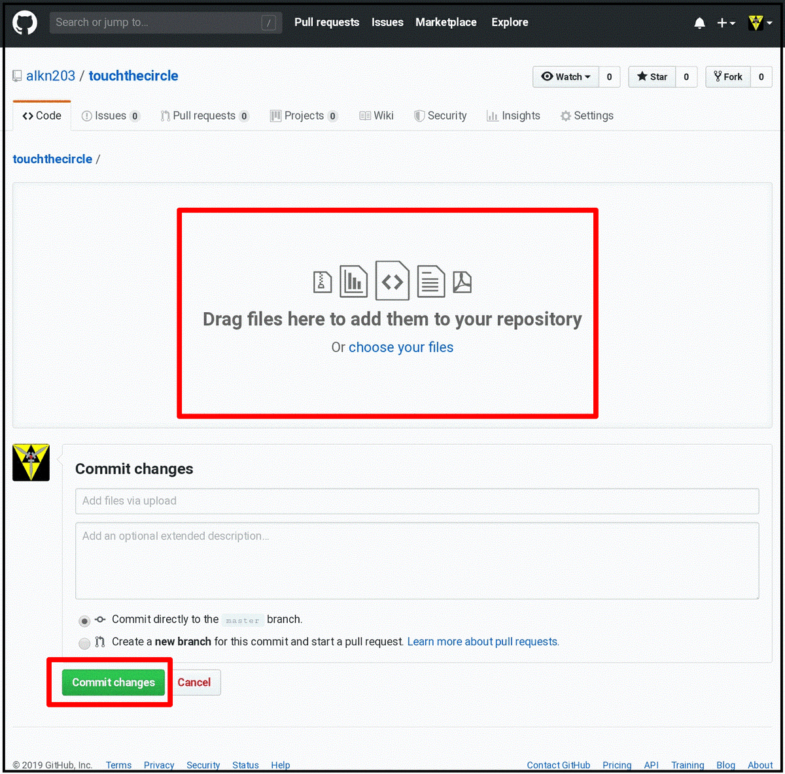
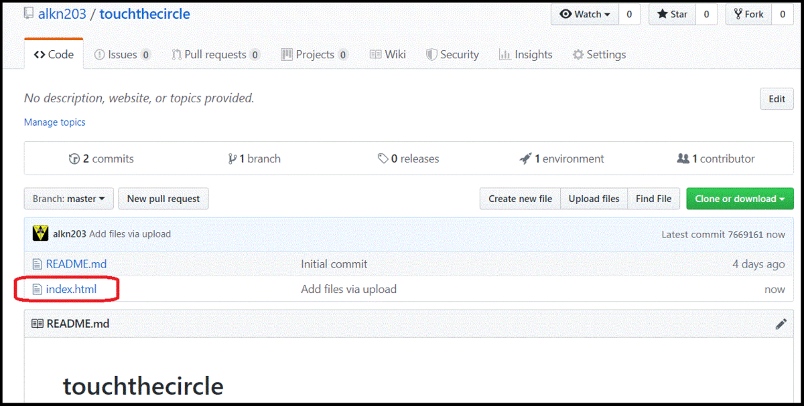
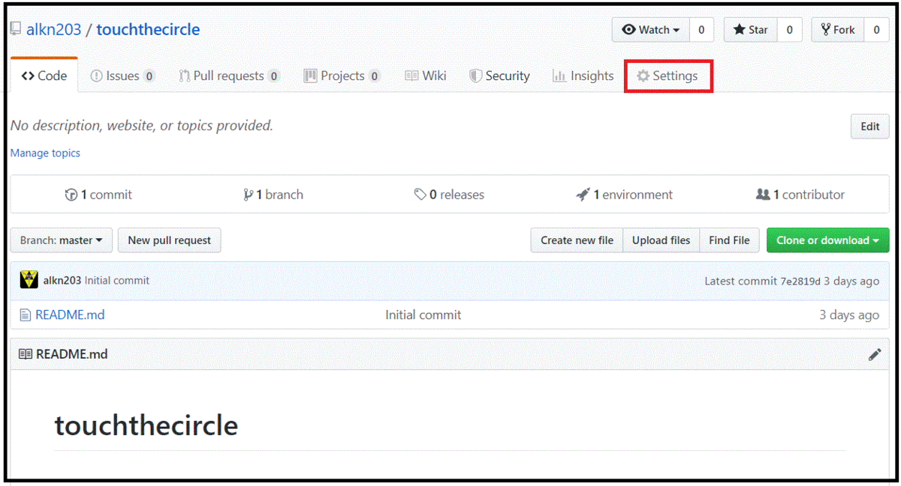
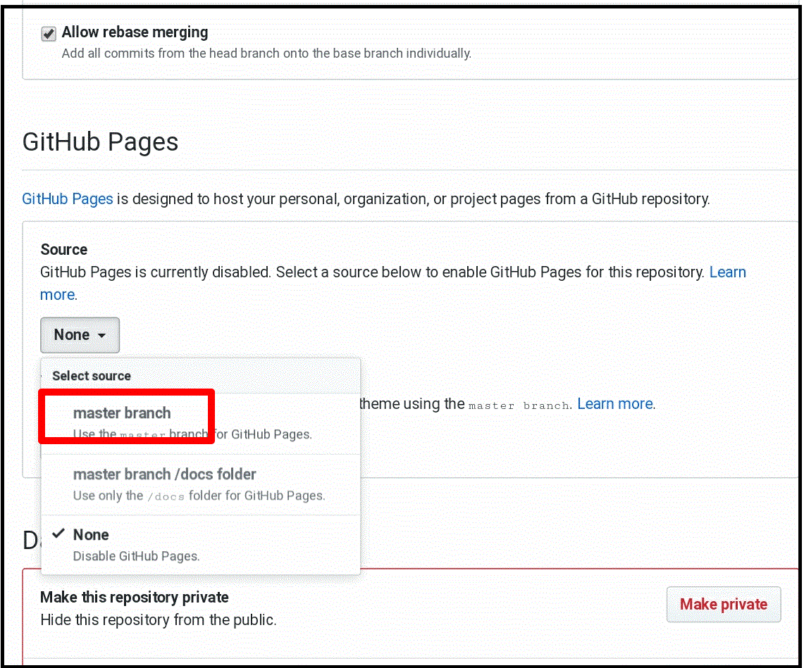
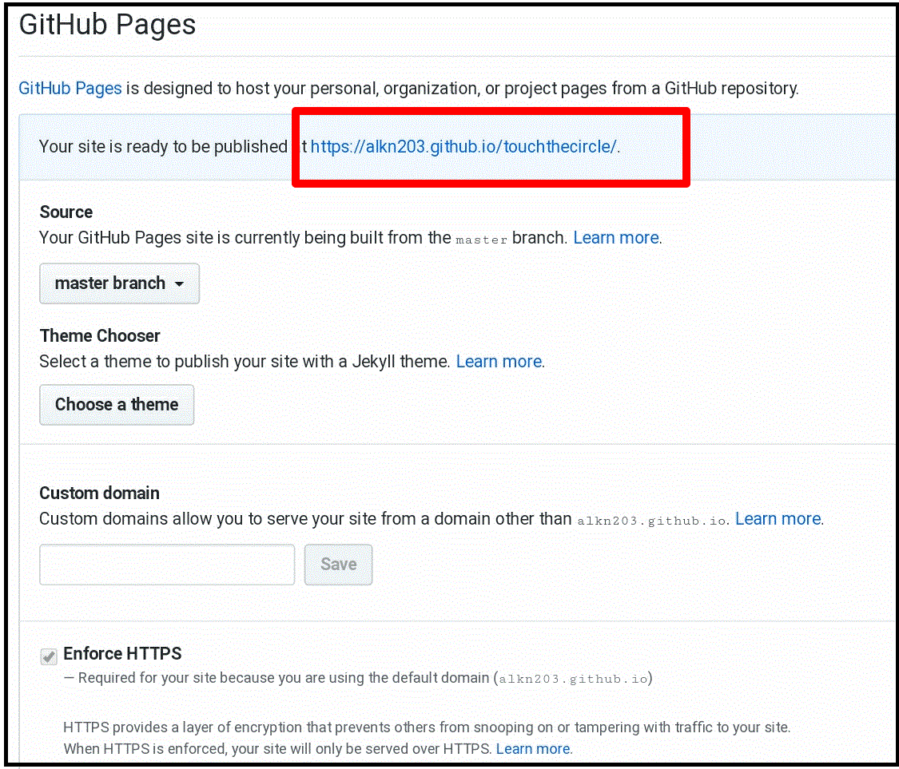

Table of contents
はじめに
ゲームを作っている人なら、自分の作ったゲームを誰かに遊んでもらいたい気持ちは皆持っていると思います。今では、スマホアプリを作ってプラットフォームで公開する方法がメジャーですが、初心者にとってはそう簡単にはいかないものです。
中には、アプリ化まではいかないけど何かゲームを作って公開してみたいと思っている人もいるでしょう。そのようなときは、javascriptでhtml5ゲームを作って、Webで公開することをおすすめします。（もちろんhtml5ゲームをアプリ化する方法もあります）
Webブラウザだけでゲームを作成して公開する
今回は、特別な環境構築をせずに、Webブラウザだけを使ってhtml5ゲームを公開する方法を紹介します。大まかな流れは以下のとおりです。
- runstantでコーティングする
- runstantプロジェクトをhtmlファイルとしてダウンロードする
- GitHubにゲーム公開用のリポジトリを作る
- htmlファイルをGitHubのリポジトリにアップロードする
- GitHubのリポジトリの設定でGitHub Pagesを有効にする
それでは、順番に説明していきます。
runstantでコーティングする
runstantは、phina.jsの生みの親であるphiさんが開発したWebブラウザ上で動くオンラインエディタで、ユーザー登録すれば誰でも利用することができます。 phina.jsの公式エディタでもあり、実際に様々なプログラムが作られて公開されています。
phina.jsのひな形からゲームを作成
これまでも触れていますが、普段私が使っているphina.jsのひな形から作ることで、簡単に始められます。
今回作ったゲーム
サンプルとして、制限時間内にどれだけ円をタッチできるかを競う単純なゲームを作りました。
runstantプロジェクトをhtmlファイルとしてダウンロードする
ゲームを作ったら、Webに公開するファイルの準備をする必要がありますが、runstantの便利な機能として、プロジェクトのダウンロードがあります。 ダウンロードされたファイルはhtml形式でjavascriptのコード部分もパッケージ化されているので、このファイル１つあればゲームとして動作します。
プロジェクトのダウンロード方法

- runstantの画面下部にあるボタンをクリックすると、プロジェクトのダウンロードができます。ダウンロード先は任意の場所にして、ファイル名をindex.htmlに変更して下さい。
GitHubにゲーム公開用のリポジトリを作る
GitHubは、プログラマなら誰もが知るようになりつつある、主にソースコードのバージョン管理を目的としたサービスです。 今回は、このGitHubをゲームの公開用サーバとして利用します。
ユーザー登録を行ったら、ゲーム公開用のリポジトリを作成します。
- ユーザーホーム画面で「New」ボタンをクリックします。

- 作成画面でリポジトリ名を入力します。
- 公開範囲が「Public」になっているのを確認します。
- 「リポジトリをREAD ME で初期化」にチェックを入れます。
- 「Create repository」ボタンをクリックします。
htmlファイルをGitHubのリポジトリにアップロードする
リポジトリの用意が出来たら、runstantからダウンロードしたhtmlファイルをリポジトリにアップロードします。GitHubは、ローカル環境からgitのコマンドを駆使して使うイメージがありますが、GitHub上のGUI操作でもファイルのアップロード程度はできます。

- 「Upload files」ボタンをクリックします。

- 上の領域にダウンロードしたhtmlファイルをドラッグするか、ファイル選択ダイアログでファイルを選択します。
- 「Commit Changes」ボタンをクリックします。

- ファイルがアップロードされたのを確認します。
GitHubのリポジトリの設定でGitHub Pagesを有効にする

- 上部メニューから「Setting」をクリックします。

- 「github pages」を有効にします。以前は、git でgh-pages名でブランチを切って、pushする必要がありましたが、現在は不要になっています。

- 上部に表示される アドレスが公開先のアドレスになります。
- 反映されるまでには、少し時間がかかる場合もあるようです。